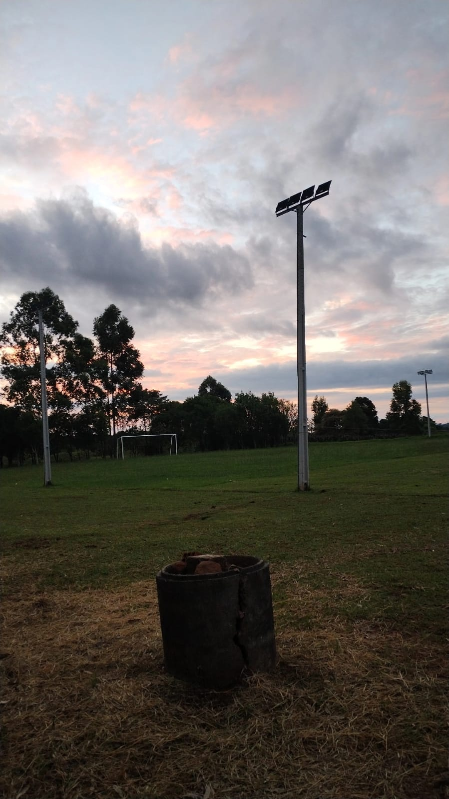
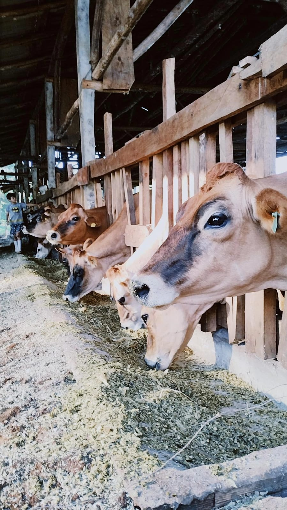

Bem-vindo ao nosso projeto!
O Paraná é um estado rico em natureza, cultura e produção agrícola. Este site tem como objetivo destacar a importância da vegetação nativa, a diversidade de frutas como as vergamotas, e o valor histórico e ambiental do pinheiro araucária, símbolo do nosso estado. Ao explorar cada página, você conhecerá mais sobre as riquezas naturais paranaenses, a importância da preservação ambiental, e como o campo e a cidade estão conectados através do respeito à terra, à biodiversidade e às tradições regionais.
 